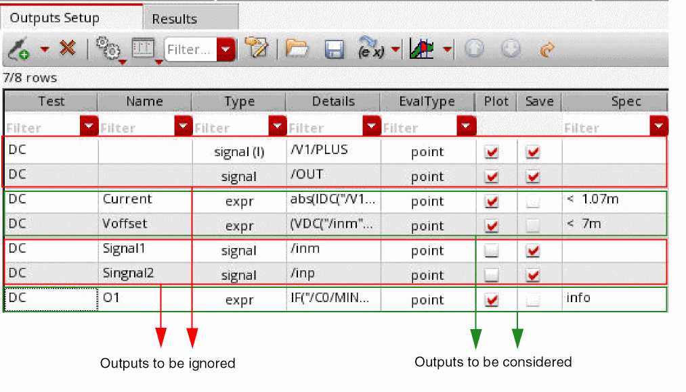

Outputs Supported by the Confidence Interval - Autostop Method
The following outputs are supported by the Confidence Interval - Autostop method:
- Outputs with specification type info. For such outputs, the specification target values are not required.
- Outputs with the following specification target values: minimize, maximize, <, >, range, and tol.
The following outputs are ignored by the Confidence Interval - Autostop method:
- Outputs with specification type none.
- Outputs that are disabled, that is, the outputs for which the Plot check box is not selected.
For example, outputs that are highlighted in green are considered and the outputs that are highlighted in red are ignored, as shown in the following outputs setup.

Related Topics
The Confidence Interval - Autostop Method
Advanced Options of the Confidence Interval - Autostop Method
Running the Confidence Interval - Autostop Method
Return to top